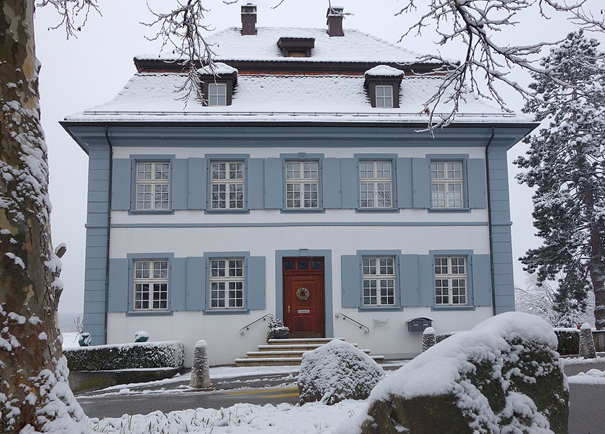
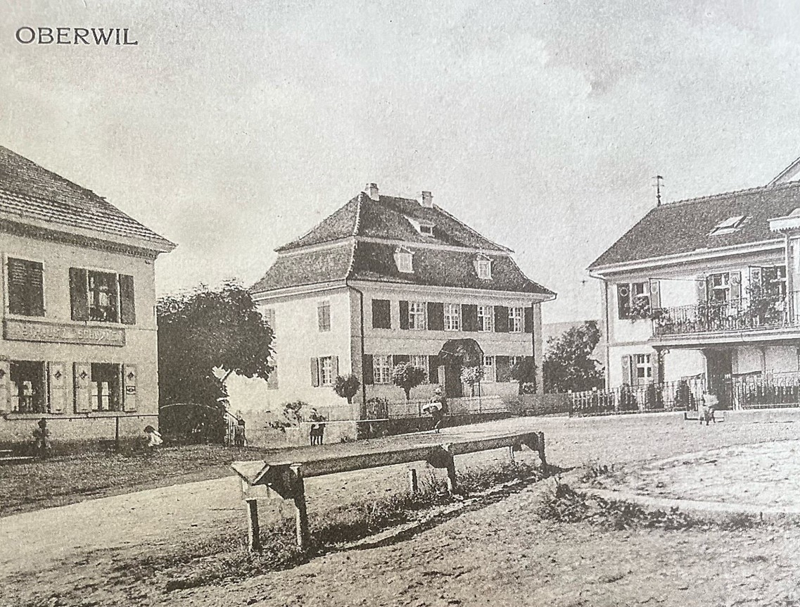
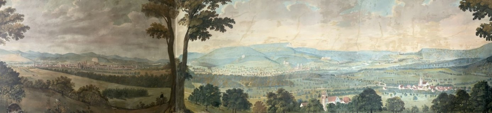

Das Pfarrhaus der römisch-katholischen Kirchgemeinde Oberwil ist ein bedeutendes Baudenkmal der an baulichen Schönheiten nicht mehr allzu reichen Leimentaler Gemeinde. Schmuck präsentiert es sich nach der gelungenen Renovation von 1965 am südlichen Ende des Dorfplatzes, der in den vergangenen Jahrzehnten zu einem vielbefahrenen Verkehrsknotenpunkt geworden ist. Der Strassenkorrektion in den 1960er Jahre des vergangenen Jahrhunderts fiel das Vorgärtchen zum Opfer, eine begrünte Betonmauer begrenzt das etwas isoliert stehende Pfarrhaus.
Frontansicht des verschneiten Pfarrhauses von Oberwil. (Foto: Jonas Engeler)
Ein architektonisches Erbe
Seit 1969 steht das Pfarrhaus auf der Liste der geschützten Baudenkmäler des Kantons Basel-Landschaft. Es repräsentiert den spätbarocken Typ eines Pfarrhauses und ist ein gelungenes Beispiel für den architektonischen Einfluss des französischen Stils unter Louis XVI. (1754–1793). Die Betonung der Mittelachse und die elegant geschwungene Form des Mansardendachs zeugen von dieser Epoche, wobei letzteres noch der Architektur von Louis XV. (1710–1774) verpflichtet ist. Die architektonische Fassadengliederung des Gebäudes ist in ehemals ländlichen Gemeinden selten anzutreffen. Dieses Baudenkmal kombiniert harmonisch Elemente des französischen Spätbarocks und verleiht dem Ort eine historische Komponente. Die gelungene Restaurierung 1964/65hat den Charme und die Bedeutung dieses Bauwerks bewahrt, und es bleibt ein wertvolles Zeugnis der architektonischen und kulturellen Geschichte von Oberwil.
Der lange Weg zum Pfarrhausbau
Im Jahr 1643 wandte sich der Oberwiler Pfarrer Andreas Bischoff mit
einer Bittschrift an den Fürsten von Pruntrut/Porrentruy und beklagte,
dass es im gesamten Bistum kein ärmlicheres Kirchenamt als das in
Oberwil gäbe. Er hatte weder Herberge noch ein Haus, um seine Gebete zu
verrichten, und war gezwungen, stets unter dem Bauernvolk zu verweilen.
Diese Klage verdeutlicht, dass der erste Pfarrer von Oberwil nach dem
Dreissigjährigen Krieg (1618–1648) kein eigenes Pfarrhaus besass,
vermutlich war es während der Kriegswirren zerstört worden.
Ein Visitationsbericht aus jener Zeit beschreibt Pfarrer Bischoff wenig
schmeichelhaft: Die Kirche sei in einem schlechtem Zustand und Bischoff
selbst führe ein anstössiges Leben. Angesichts der Wirren der
Reformation, der Gegenreformation und der Schrecken des Krieges war dies
kaum verwunderlich. Jahre vergingen, doch Oberwil blieb ohne Pfarrhaus
und auch Bischoffs Nachfolger mussten unter schlechten Bedingungen
leben. Erst 1748 brachte ein Wandel: Willhelm Ignaz Scheppelin trat das
Amt des Pfarrers an. In der ländlichen Region des 18. Jahrhunderts
spielte der Pfarrer eine zentrale Rolle im Gemeindeleben. Er leitete
Gottesdienste, spendete Sakramente und sorgte für die religiöse Bildung
der Gemeindemitglieder. Darüber hinaus war er oft als Lehrer tätig und
unterrichtete die Kinder in Lesen, Schreiben und Religion. Als
moralische Autorität prägte der Pfarrer die ethischen Vorstellungen der
Dorfbewohnende und setzte christliche Normen und Werte durch. Scheppelin
übernahm somit eine vielschichtige Position im sozialen und kulturellen
Gefüge der Gemeinde. Scheppelin, aus einer wohlhabenden Familie
stammend, setzte sich energisch für den Bau eines neuen Pfarrhauses ein.
Doch die Finanzierung stiess auf Widerstand, da niemand die Kosten
übernehmen wollte. Er sah das Domkapitel und die regionalen
Adelsfamilien, die den Kirchenzehnt einzogen, in der Pflicht. Der
Bischof entschied schliesslich zugunsten des Pfarrers, doch das
Domkapitel zog den Fall bis nach Wien. Da das Fürstbistum Basel zum
Heiligen Römischen Reich Deutscher Nation gehörte, musste der Kaiser
eingreifen.
Am 17. November 1752 forderte Kaiser Franz I. (1708-1765) den Bischof
auf, den Bau des Pfarrhauses endlich zu beginnen. Doch der Bischof und
das Domkapitel verzögerten den Prozess, wodurch sich das Verfahren über
Jahrzehnte hinzog. Diese langwierigen Verhandlungen führten dazu, dass
das Pfarrhausprojekt in einer endlosen Schleife von Bürokratie und
Intrigen gefangen blieb. Erst als der Reichsgerichtshof eingriff und ein
endgültiges Urteil fällte, wurde das Domkapitel zur Finanzierung des
Pfarrhauses verpflichtet. Die Kosten beliefen sich auf rund 1000 Pfund –
eine beträchtliche Summe für die damalige Zeit. Die Adelsfamilie der
Hallwyler wurde ebenfalls in die Pflicht genommen.
Nach rund dreissig Jahren komplizierter und oft verzögerter
Prozessführung wurde der Bau 1788 endlich abgeschlossen und 1792 das
Pfarrhaus eingesegnet. Das Gebäude steht heute als bedeutendes Zeugnis
der langen und schwierigen Auseinandersetzungen um seine Errichtung. Die
zahlreichen bürokratischen Hürden und Verzögerungen machen die
Fertigstellung des Pfarrhauses zu einem bemerkenswerten Erfolg und einem
Symbol für den eindrücklichen Durchhaltewillen. Heute gilt das Pfarrhaus
als ein Ort des Friedens, wie in einer Inschrift über der Haupttüre zu
entnehmen ist, die bei der Einsegnung 1792 angebracht wurde.
DOMUS (PACIS) UNIQUE VOCETUR SI LITIS ANTIQUE AVERSIONE EXITRUTUR
Haus des Friedens möge es wahrhaft genannt werden, sofern es in
Abkehr vom alten Streit erbaut worden ist.
Hauseingang mit Inschrift in der Mitte. (Foto: Jonas Engeler)
Das Pfarrhaus am Schwanenplatz um 1900. (Bild: Verein Alt-Overwil)
Historische Wandbilder enthüllt: Restaurierung des Oberwiler Pfarrhauses
Bei den Restaurierungsarbeiten im Jahr 1970 kam im Studierzimmer im ersten Stock des Oberwiler Pfarrhauses ein umfangreicher Zyklus von Wandbildern zum Vorschein. Das beeindruckende Wandgemälde, etwa acht mal zwei Meter gross, stellt das Leimental, das Birseck und die Stadt Basel dar. Besonders auffällig ist die Malerei an der Ostwand (rechte Seite des Bildes), die knapp fünf Meter misst. Der Blick schweift von einer Anhöhe über das Dorf Oberwil, dessen Kirche, einige Bauernhäuser und das Pfarrhaus mit Mansardendach zu sehen sind. Weiter östlich dominiert die Kirche von Therwil in der Talebene, während das Dorf Ettingen am Fuss des Blauens, eines Gebirgszugs, den Abschluss bildet. Im Hintergrund erhebt sich das langgezogene Gempenmassiv über dem Birstal. Unter dem Gebirge sind die Ruinen von Reichenstein, Birseck und Dorneck sichtbar. An den Hängen erkennt man von links nach rechts die Dörfer Münchenstein, die Industriesiedlung Neue Welt, Arlesheim, Oberdornach und Dornachbrugg. Der Verlauf der Birs ist bis zur Burg Angenstein gut sichtbar. Weiter rechts führt der Weg nach Aesch, gekennzeichnet durch das Blarerschloss und die Dorfkirche, hinauf zur Ruine Pfeffingen und dem Dorf Pfeffingen mit seiner Kirche. Im Vordergrund beleben Tiere, Schweizer Fähnchen und Tannen die Dörfer Oberwil und Therwil. Die Präsenz von Schweizer Kreuzen deutet darauf hin, dass das Bild erst nach dem Wiener Kongress 1815 entstanden sein muss, da das ehemals fürstbischöfliche Birseck erst zu diesem Zeitpunkt zu Basel und somit zur Eidgenossenschaft kam. Der Kunsthistoriker Hans Rudolf Heyer hat das Wandgemälde dem in Basel ansässigen Maler Maximilian Neustück (1756–1834) zugeschrieben und vermutet, dass es um das Jahr 1825 entstanden ist.
Maximilian Neustück zugeschrieben, Wandmalerei um 1825, Panorama im ehemaligen Bischofszimmer des Oberwiler Pfarrhauses, Nord- und Ostwand (Foto: Jonas Engeler)
An der Nordwand (linker Teil des Bildes) des Pfarrhauses erstreckt sich
auf einer Fläche von 2,04 mal 2,75 Meter ein Panorama der Stadt Basel,
eingerahmt von hohen Baumkulissen. Im Vordergrund sieht man eine
bucklige Katze, hinter der sich der Tüllingerhügel mit seiner Kirche
über das Rheintal erhebt. In der Bildmitte hebt sich die Stadt Basel als
horizontales Band aus der Landschaft hervor, wobei besonders das Münster
und das Spalentor über die Ringmauern hinausragen. Der Schwarzwald und
das Wiesental mit den Dörfern Riehen, Stetten, Lörrach und Grenzach
bilden die Abschlusskulisse. Rechts hinter einem Baum ragt der
Margaretenhügel mit der Kirche über Binningen empor.
Im Jahr 1990 wurde das Pfarrhaus einer erneuten umfangreichen Renovation
unterzogen. Obwohl sich das äussere Erscheinungsbild des Gebäudes durch
die Renovation kaum verändert hat, wurde das Innere des Hauses unter
Wahrung der Bausubstanz umgestaltet. Seit der Renovation steht das
Erdgeschoss im Zeichen der Pfarreiarbeit: Es beherbergt das Sekretariat,
ein Besprechungszimmer, ein Arbeitszimmer und einen Kopierraum. Die
beiden Obergeschosse dienen seitdem als Wohnraum.
Die Wandbilder und die sorgfältig durchgeführte Renovation des
Pfarrhauses sind bedeutende Zeugen der historischen und kulturellen
Entwicklung der Region. Die Kunstwerke bieten nicht nur einen
beeindruckenden visuellen Genuss, sondern auch einen tiefen Einblick in
die Geschichte und Landschaft der Gegend. Heute gilt das Pfarrhaus als
ein Haus des Friedens, das die Vergangenheit bewahrt und der Gemeinde
als lebendiges Erbe dient.
Jonas Engeler ist Theologiestudent im Bachelor an der Theologischen Hochschule Chur
Weitere Artikel von {{ author.author }} finden Sie hier:
Zur Vertiefung:
- Ryf Pascal: Oberwil – einst und heute, Basel 2016.
- Baselbieter Heimatbuch 13, herausgegeben von der Kommission für archäologische Forschung und Altertumsschutz des Kantons Basel-Landschaft, Liestal 1977.
- Baur Hans Peter: Kirche St. Peter und Paul Oberwil BL, Basel 1997.